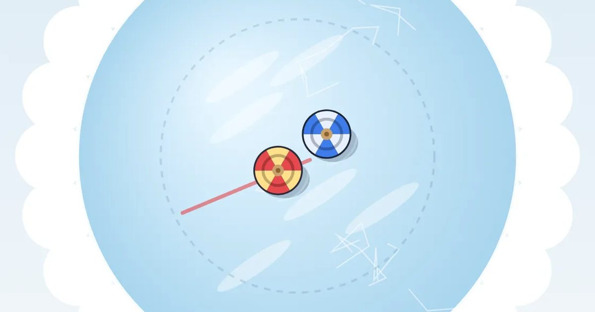

팽이 싸움
Top Battle
전통놀이 · 채찍질무료설치 없음폰 · PC
▶ 지금 바로 하기로그인 없이 브라우저에서 바로 시작돼요
어떤 게임인가요?
꽁꽁 언 얼음판에서 팽이 싸움! 팽이를 손가락으로 휙 그어 채찍질하면 더 세게 돌고 그쪽으로 밀려가요. 상대 팽이에 부딪혀 먼저 쓰러뜨리거나 얼음 밖으로 밀어내면 이겨요. 둘이서 한 폰으로도 붙어요.
목표 · 채찍질로 팽이를 돌려 상대 팽이를 쓰러뜨리거나 얼음 밖으로 밀어내기.
게임 방법
- 내 팽이(빨강) 옆을 손가락으로 휙 그으면 채찍질 · 빨리 그을수록 세게 돌아요
- 그은 방향으로 팽이가 밀려가요 · 상대에게 부딪혀 보세요
- 더 빨리 도는 팽이가 부딪힘에서 이겨요 · 돌기 막대를 지켜보세요
- 팽이가 멈추거나 얼음 밖으로 나가면 져요
- 둘이서: 아래 절반은 1P(빨강), 위 절반은 2P(파랑)
- 키보드: 방향키로 밀기 · 스페이스로 채찍질
공략 팁
- 팽이를 직접 누르지 말고 옆을 휙 그어요
- 돌기가 상대보다 셀 때 부딪혀야 이겨요
- 가장자리 가까이 가면 안쪽으로 채찍질
- 돌기 막대가 빨개지면 얼른 채찍질
 무당벌레 오락실
무당벌레 오락실 성 지키기
성 지키기 통통 배구
통통 배구 과일 베기
과일 베기 지뢰찾기
지뢰찾기 십장생 짝맞추기
십장생 짝맞추기